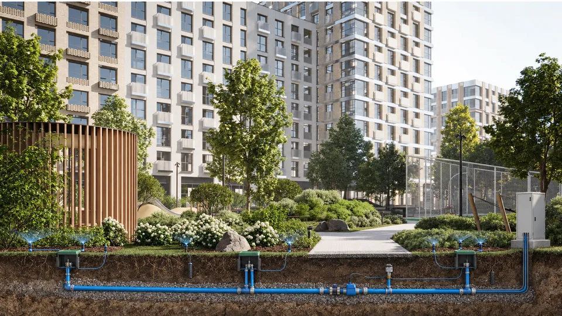
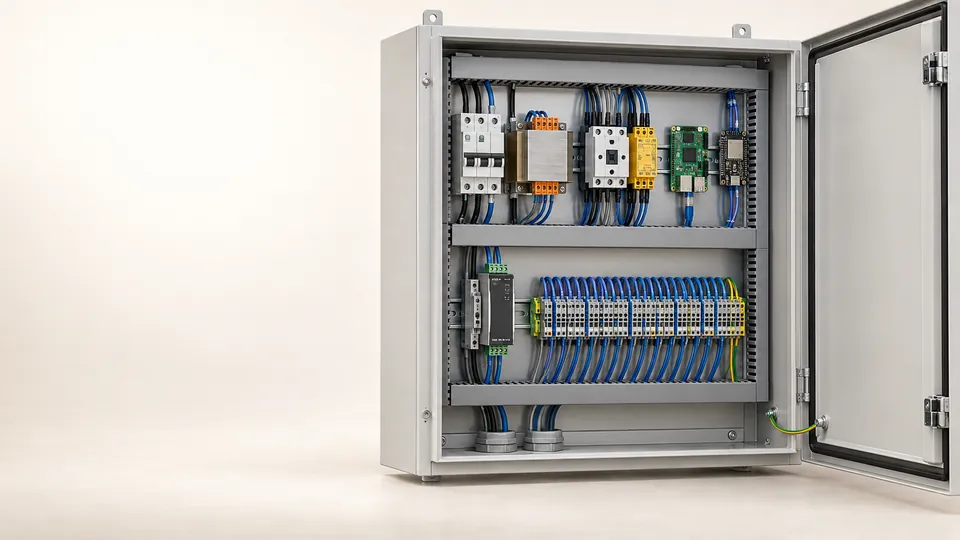
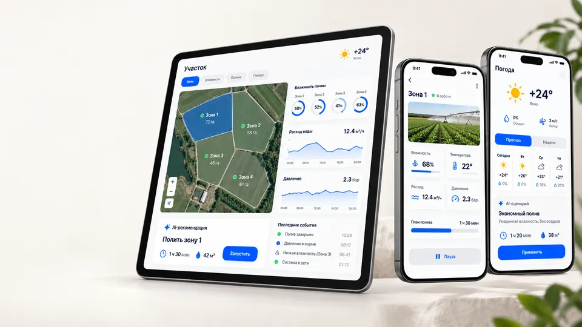
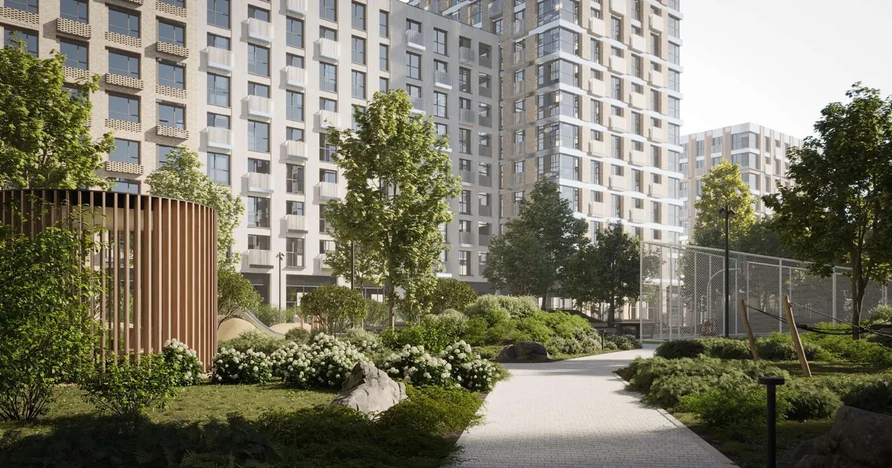
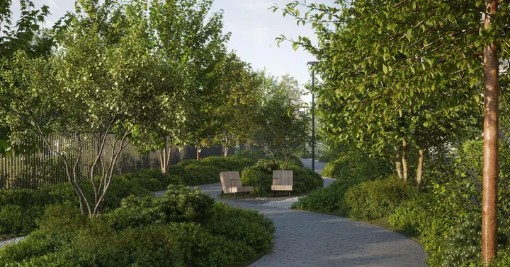
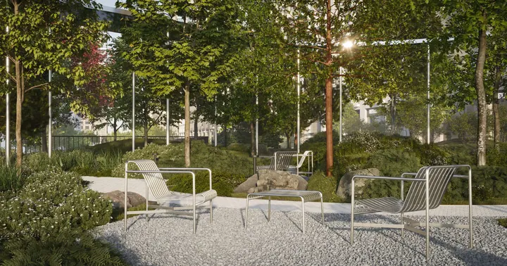
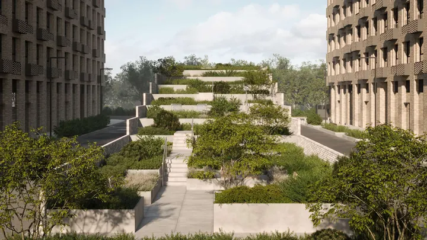

01
Один график для всех
Газон, деревья и цветники получают воду по времени, а не по фактической потребности.
Инвестиционный проект · Москва · 2026
Автоматизированное управление поливом для жилых и коммерческих ландшафтов: датчики, локальный контроллер и инженерный шкаф на 16 зон. Привлекаем 1 млн ₽ и ищем 2–3 пилотных объекта.
Обсудить участиеДвор корпуса 1, ЖК «Life Варшавская» — типовая пилотная площадка. Макет построен по генплану; размещение системы — концепт
Проблема рынка
Газон, деревья и цветники получают воду по времени, а не по фактической потребности.
Влажность, расход и давление живут в разных устройствах или не измеряются вовсе.
Утечку, сухой ход или закрытую зону замечают после повреждения посадок.
Погода, сезон и тип почвы зависят от опыта конкретного специалиста.

Бизнес-следствие
Перерасход воды, потеря посадок, аварийные выезды и споры между подрядчиками
Главная проблема — нет обратной связи: система выполняет расписание, но не понимает результат. Датчики ценны не сами по себе — они позволяют раньше заметить утечку, недостаток воды или сбой насоса.
Технологическое решение
Прямое солнце во дворе, часов в день
менее 17
По схеме проекта благоустройства, сетка 1×1 м
Во дворе пилотного объекта прямое солнце — от менее часа до 7 часов в день, грунт над паркингом — от 1 до 2,7 м. Один график полива здесь не работает по определению.
Влажность почвы в каждой зоне, расход и давление в магистрали, погода. Датчики почвы работают по линии RS-485 и дают фактическую обратную связь вместо календаря.
Отдельный сценарий для каждой зоны и вида растений: газон, деревья, кустарники, цветники. Решение принимается на объекте и не зависит от облака.
Насос 230 В и до 16 клапанов 24 В: вода идёт только в ту зону, которой она нужна сейчас. Профили нормального расхода и давления по зонам — первая доработка в плане.
Утечку, сухой ход и опасный режим. Аппаратная цепь снимает разрешение насоса независимо от приложения и ИИ, даже без интернета.
Так система спроектирована; физические испытания впереди
до 16 зон · клапаны 24 В · насос 230 В · Raspberry Pi + ESP32 · расчётный расход 3,0–3,2 м³/ч

Инженерный шкаф
В основе — насосный контур 230 В, выходы на 16 клапанов 24 VAC, Raspberry Pi для интерфейса и аналитики и ESP32 для управления в реальном времени со сторожевым таймером. Аппаратная цепь безопасности — «стоп», утечка, низкий уровень воды — размыкает контактор насоса KM1 независимо от Linux, приложения или алгоритма.
Статус: расчёт пройден, ждём физических испытаний T01–T14 и проверки 230 В

Приложение и ИИ
На одном экране — карта зон, влажность, расход, давление, погода, история и предупреждения. ИИ учитывает растения, почву, прогноз и данные датчиков и предлагает время, длительность и объём полива. Сначала инженер подтверждает сценарий; автоматический режим — только в безопасных пределах.
Начинаем с правил, а не с нейросети
После сезона данных правила сравниваются с ML-моделью — так доказывается, даёт ли ИИ добавочную ценность.
Статус: приложение и ИИ — этап разработки
Пилотная площадка
Москва, 2-й Котляковский переулок, очередь 2.4. Двор над подземным паркингом, бульвар, площадь с перголой и сад на кровле въездной рампы. Разные посадки, зоны и режимы полива на одном участке — на этом объекте показываем, как система ложится на реальный проект. Двор корпуса 1 на макете выше — 10 зон одного шкафа, размещение концептуальное.

Проектные визуализации благоустройства ЖК «Life Варшавская», АБ «Базис», 2024. Системы PANORAMA на изображениях нет



Посадки
Автоматика не ограничивает ассортимент. Правило одно: растение не подключается к той же зоне, если его потребность во влаге заметно отличается от соседей. Решение — отдельный клапан, свой датчик и подходящий эмиттер.
Без адаптации не подключаем
Болотные и водные растения, промышленную теплицу с фертигацией, растения с разной потребностью во влаге в одной зоне.
Ценность для рынка
Защищает готовое благоустройство после сдачи. Дорогие газоны, деревья и кустарники меньше зависят от человеческого фактора.
Получает контролируемый инженерный узел с журналом событий и диагностикой, а не «чёрный ящик», который приходится искать по участку.
Видит расход, давление и аварии удалённо и сокращает диагностические выезды. Журнал зон — аргумент в гарантийных спорах.
Быстрее находит неисправности и продаёт мониторинг после монтажа. PANORAMA идёт на рынок через интеграторов, а не вместо них.
Автоматизация сокращает не всю работу садовника, а подачу воды и диагностику. Обрезка, уход, ремонт форсунок, очистка фильтров и зимняя консервация остаются. Эффект в часах, воде и энергии измеряется на пилоте.
| Операция | Ручной полив | Обычный автополив | PANORAMA |
|---|---|---|---|
| Запуск полива | Человек открывает краны и шланги | Контроллер по расписанию | Решение по профилю зоны и датчикам |
| Проверка влажности | На глаз | Иногда датчик дождя | Почва + погода + история зоны |
| Поиск утечки | После ущерба или жалобы | Ручной обход | Ранний сигнал по расходу и давлению |
| Насос | Контроль косвенный | Автоматика запуска | Аппаратные блокировки и журнал событий |
| Сервис | Регулярные обходы | Плановые проверки | Проверки и реакция на конкретные аварии |
Цена и конкуренты
Честный вывод
Мы дороже простого контроллера — и это другой класс продукта.
В комплекте конкурента за 221 тыс ₽ ещё нет:
Задача пилота — подтвердить цену коммерческими предложениями и полной сметой.
Проверка
Сегодня пройден расчёт, физических испытаний ещё не было. Поэтому путь к продукту расписан этапами, у каждого — проверяемое условие перехода. Этапы 1–3 — стенды первых трёх месяцев раунда; этапы 4–6 идут на пилотных объектах, а сравнительный сезон требует полного сезона полива.
Электрический стенд
16 каналов 24 VAC под нагрузкой, watchdog, 100 перезапусков
Условие0 ложных запусков; безопасное состояние после сброса
Цепь безопасности NC
STOP, протечка, низкий уровень, защита двигателя
УсловиеКаждый разрыв физически снимает KM1
Гидростенд, 2–4 зоны
Нет потока, повышенный расход, превышение давления
УсловиеКаждый сценарий обнаружен и записан
Закрытый пилот
Реальный участок, 4–8 недель
УсловиеСобраны базовые профили влажности, расхода и давления
Сравнительный сезон
Обычный алгоритм против интеллектуального
УсловиеВода, кВт·ч, часы труда, выезды, состояние растений
Строительный пилот
Девелопер, управляющая компания, интегратор
УсловиеПодтверждены экономический эффект и формат интеграции
Что измеряем на пилоте
Вопросы инвестора
Сравнивать нужно с полным комплектом. Даже набор Hunter с датчиками и расходомером не включает шкаф, управление насосом 230 В, контроль давления, проектирование и пусконаладку. Ценность продаётся через снижение аварий, выездов и сохранность ландшафта — и подтверждается на пилоте сметой и коммерческими предложениями.
Продукт на ИИ не держится. Базовая ценность — правила и пороги, профили расхода и давления по зонам, аппаратная защита. ИИ без накопленных данных может оказаться маркетинговым слоем, поэтому после сезона его сравнивают с базовыми правилами и оставляют только при доказанной добавке.
Испытаниями до коммерческого выпуска: электрический стенд, проверка цепи безопасности, гидростенд. Команда подключает внешних специалистов по автоматике, гидравлике и 230 В. На испытания заложено 16 % раунда, на оборудование опытных шкафов — 43 %.
Критические функции не должны зависеть от интернета. ESP32 держит управление в реальном времени и watchdog, Raspberry Pi — интерфейс и аналитику. Погода подключается как дополнительный вход, без которого система всё равно работает. Это важно для коттеджных посёлков, гостиниц и общественных пространств.
Сезонность и зимняя консервация повышают требования к сервису и усложняют годовую выручку — это признанный риск. Смягчают его две вещи из модели: каждый сезон пополняет датасет для алгоритмов и сервиса, а сервисные компании и управляющие компании могут продавать мониторинг после монтажа.
У интеграторов Hunter и Rain Bird уже есть объекты, монтажники и ответственность за гидравлику, но ценность у них сосредоточена в монтаже и расписании. PANORAMA добавляет диагностику поверх привычной гидравлики — и даёт им сервис, который можно продавать после сдачи.
Раунд · 12 месяцев
1 000 000 ₽
Модель выручки — продажа пакета PANORAMA Control по целевой цене 360–450 тыс ₽ за шкаф на 16 зон через ландшафтных интеграторов; мониторинг после монтажа — дополнительный сервис для них и управляющих компаний.
Что уже сделано
Куда идут деньги
Деньги идут прежде всего в оборудование и физическую проверку; рекламной кампании в бюджете нет.
Результат через 12 месяцев
Два испытанных шкафа, рабочее приложение, данные пилотов, платные внедрения и смета малой серии.
Команда
Два основателя из МГСУ и внешние эксперты по автоматике, гидравлике и работе с 230 В. Имена и роли — на встрече.
Инвестору покажем инженерный отчёт по контуру 230 В, смету и стратегию выхода на рынок; условия входа обсуждаем на встрече. Девелоперу, управляющей компании или интегратору — расскажем, как попасть в число 2–3 пилотных объектов.
Аналитический отчёт PANORAMA